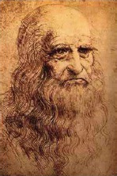

Leonardo da Vinci (1452-1519), tüm dünyada tarihin en önemli yaratıcı dâhilerinden biri kabul edilir. Pek çokları tarafından resim, heykel, mimarlık, müzik, mühendislik ve fen bilimleri gibi çeşitli alanlarda mükemmelleşmiş, en önde gelen Rönesans insanı olarak görülür.

1452’de İtalya’da, Vinci’de dünyaya gelen da Vinci, Ser Piero da Vinci’nin gayrimeşru oğluydu. Hayatı boyunca kendisine basitçe ‘Leonardo’ denmesini istedi; da Vinci, “Vinci’den gelen” demekti. Sanat kariyerine Floransa’da, 1470’ten 1477’ye kadar yanında çalıştığı heykeltıraş ve ressam Andrea del Verrocchio’nun (1435-1488) çırağı olarak başladı.
Da Vinci, Floransa’yı Milan Dükü Ludovico Sforza ile çalışmak için 1481’de terk etti. Milan’da geçirdiği yıllar boyunca çeşitli projeler üzerinde çalıştı. Bina güçlendirmeleri tasarladı, binicilikle ilgili modeller yaptı ve Son Akşam Yemeği tablosunu yarattı. Binicilikle ilgili hiçbir modeli bitirmemesine rağmen, Fransız ordularının atış talimlerinde kullanıldığı için sonraları küçük parçalara ayrılan bir modeli tam şekliyle yaptı.
Da Vinci, 1499’da en ünlüsü Mona Lisa olan bir dizi resim üzerinde çalıştığı Floransa’ya döndü. 1513 ile 1516 yılları arasında, Papa Meclisi tarafından ikna edilerek Roma’ya yerleşti. Sonra Milan’ı yeniden ele geçiren Fransız Kralı I. Francis’in mülkünde yaşamak üzere davet edildiği Fransa’ya taşındı. 1519’da Chateau of Cloux’da öldü.
Da Vinci en çok, Mona Lisa ve Son Akşam Yemeği resimleri ile ünlü olmasına rağmen, uçmanın fiziğinden insan anatomisine uzanan geniş bir konu yelpazesi üzerinde çizimleri ve açıklamalı dipnotlarını topladığı ciltler dolusu eskiz defteriyle de bilinir. Bunlar arasında rahimdeki bir ceninin çizimi bile vardır. Da Vinci bu çizimi hayal gücünü kullanarak çizmiş olmalı, çünkü kadınların kesip incelenmesi o zamanlar yasaktı.
Dehası ve şöhreti sayesinde da Vinci, diğer sanatçılar için ölümsüz bir ilham kaynağı oldu. Çağdaşı Raphael, Atina Okulu adlı ünlü Vatikan freskinde Platon figürü için model olarak onun suretini kullandı. Daha yakın zamanlarda da Vinci, Uzay Yolu gibi dizilerden Da Vinci Şifresi adlı çok satan ve 2006’da beyaz perdeye uyarlanan romana kadar, geniş bir kurgu aralığında karşılaşılan bir karakter oldu.
EK BİLGİLER:
1. 1999’da da Vinci’nin devasa bir binici heykeli modelinin, biri Michigan’daki Grand Rapids’de, diğeri Milano’da olmak üzere iki büyük boy kopyası izleyicilerle buluştu.
2. Ocak 2005’te, Floransa’da Santissima Annunziata Kilisesi’nin yanındaki bir manastırda bir dizi mühürlü kapı keşfedildi. Bazıları bunların, da Vinci’nin gizli atölyesinin kapıları olduğuna inanmaktadır.